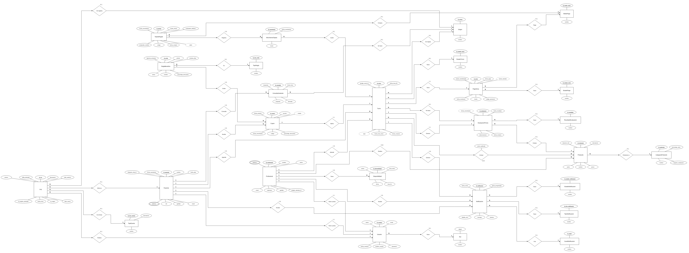
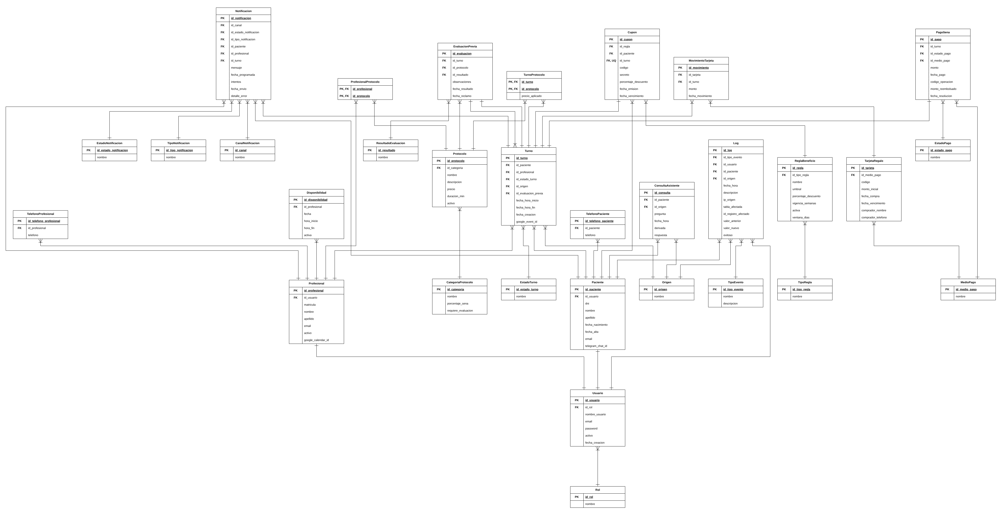

Tu base, cargada
Para contestar los quizzes no hace falta correr nada. Si querés ver los resultados con tus ojos, cargá la entrega en MySQL 8 (Workbench o consola), en este orden:
CREATE DATABASE y ahí no tenés permiso (error 1044). Usá Workbench, la consola mysql o tu base de Aiven.Se puede repetir: el 03 borra y recrea los 9 schemas, así que si probaste cosas y querés volver a cero, corré 03 → 04 → 05 otra vez.
Los resultados que aparecen en esta página se sacaron corriendo tu entrega en MySQL 8.0 con la base recién cargada (03 + 04 + 05), usando el reloj simulado SET @ahora_simulado = '2026-11-20 10:00:00'; cuando hace falta una fecha fija.
| Qué hay | Cantidad |
|---|---|
| Turnos (tabla principal) | 150: 75 realizados, 39 confirmados, 20 cancelados, 11 ausentes, 5 pendientes |
| Pacientes / teléfonos | 60 / 72 |
| Profesionales / franjas de disponibilidad | 20 / 1.443 |
| Protocolos (4 categorías) | 44 |
| Pagos de seña | 145 |
| Notificaciones | 166 |
auditoria.Log | 0: lo llenan solo los SP (consigna 4c). El 07 lo llena con CALLs reales. |
| Usuarios de prueba | admin, recepcion1, dr.marino… todos con clave dermalia2026 |
1 · El modelo
Los 9 schemas
La consigna (3c) pide el modelo dividido en schemas. En MySQL un schema es una base de datos (CREATE SCHEMA = CREATE DATABASE), las tablas se nombran schema.Tabla y las FK cruzan schemas sin problema.
| Schema | Tablas | Para qué |
|---|---|---|
seguridad | Rol, Usuario | Cuentas y roles (administrador, recepcion, profesional, paciente) |
personas | Paciente, TelefonoPaciente, Profesional, TelefonoProfesional, Disponibilidad | Quiénes son y cuándo atiende cada profesional |
clinica | CategoriaProtocolo, Protocolo, ProfesionalProtocolo, ResultadoEvaluacion, EvaluacionPrevia | Qué se hace, cuánto sale, quién lo hace, evaluaciones para cirugías |
agenda | EstadoTurno, Origen, Turno, TurnoProtocolo | Los turnos (tabla principal) |
pagos | EstadoPago, MedioPago, PagoSena, TarjetaRegalo, MovimientoTarjeta | Señas, reembolsos y tarjetas de regalo |
beneficios | TipoRegla, ReglaBeneficio, Cupon | Cupones de descuento |
notificaciones | CanalNotificacion, EstadoNotificacion, TipoNotificacion, Notificacion | Avisos (WhatsApp asistido / Telegram) que envía n8n |
auditoria | TipoEvento, Log | El modelo de logs (consigna 1d) |
asistente | ConsultaAsistente | Preguntas al asistente con IA |
Son 31 tablas en el 03. El 05 agrega tablas que no son del modelo sino auxiliares del backend: agenda.Numero (números del 0 al 47) y dos de Telegram.


Restricciones que tenés que poder explicar
| Restricción | Ejemplo real | Qué garantiza |
|---|---|---|
| FK con nombre, entre schemas | FK_Turno_Paciente: agenda.Turno → personas.Paciente | No hay turnos de pacientes que no existen |
| Tabla para lo multivaluado | personas.TelefonoPaciente con UNIQUE (id_paciente, telefono) | Varios teléfonos por paciente, sin repetir (consigna 1b) |
| Tabla maestra para lo categorizable | EstadoTurno, Origen, MedioPago, EstadoPago… | Los estados son filas, no texto suelto |
| UNIQUE en una FK | PagoSena.id_turno UNIQUE | Un turno tiene a lo sumo un pago de seña |
| FK que admite NULL + UNIQUE | Cupon.id_turno NULL UNIQUE | (0,1)–(0,1): el cupón está sin usar o usado en un solo turno, y un turno usa a lo sumo un cupón |
| CHECK de sí/no | activo SMALLINT CHECK (activo IN (0, 1)) | Un SMALLINT aceptaría 7 o -3 |
| CHECK de coherencia | CK_Turno_Fechas CHECK (fecha_hora_fin > fecha_hora_inicio), CK_PagoSena_Reembolso CHECK (monto_reembolsado <= monto) | Datos imposibles frenados en la base |
| CHECK "exactamente uno" | CHECK ((id_paciente IS NULL) <> (id_profesional IS NULL)) en Notificacion | El aviso va a una paciente o a un profesional, nunca a los dos ni a ninguno |
| CHECK de rango | vigencia_semanas BETWEEN 2 AND 8, porcentaje_sena BETWEEN 0 AND 100 | Reglas del negocio fijas |
La relación circular Turno ↔ EvaluacionPrevia
Una evaluación previa nace de un turno de consulta (EvaluacionPrevia.id_turno) y una cirugía apunta a la evaluación que la habilita (Turno.id_evaluacion_previa). No se puede crear una FK hacia una tabla que todavía no existe, así que se cierra al final:
-- Cierre de la relación circular turno <-> evaluacion previa
ALTER TABLE agenda.Turno ADD CONSTRAINT FK_Turno_EvaluacionPrevia
FOREIGN KEY (id_evaluacion_previa) REFERENCES clinica.EvaluacionPrevia(id_evaluacion);Por esa misma FK circular no hay ningún orden de DROP TABLE que funcione (error 3730). Por eso el 03 arranca así:
SET FOREIGN_KEY_CHECKS = 0;
DROP DATABASE IF EXISTS asistente;
-- ... los 9 schemas ...
SET FOREIGN_KEY_CHECKS = 1;Lo que se calcula en vez de guardarse (3FN)
- Precio final y seña del turno: no son columnas. Los calcula la vista
agenda.PrecioTurno: suma deprecio_aplicadomenos el cupón, y la seña es ese total por el mayorporcentaje_senade las categorías (30 % en general, 40 % en Cirugías). - Saldo de una tarjeta de regalo:
monto_inicial − SUM(MovimientoTarjeta.monto). Un movimiento positivo es un gasto y uno negativo una devolución (por esoCHECK (monto <> 0)y no> 0). - Intentos fallidos de login: no hay columna en Usuario; se cuentan en
auditoria.Log.
TurnoProtocolo.precio_aplicado no rompe la 3FN, si el precio ya está en Protocolo?" No: depende de la clave completa (turno, protocolo) y es el precio congelado al momento del turno. Si mañana sube el precio de lista, los turnos viejos no cambian.CHECK se respetan desde la 8.0.16. En una 5.7 se aceptan pero se ignoran. Aiven usa MySQL 8.2 · Consultas sobre tu base
JOIN entre schemas
Se nombran las tablas con su schema (observación del docente) y alias con AS:
-- Turnos realizados por profesional (top 5)
SELECT pr.apellido AS profesional, COUNT(*) AS realizados
FROM agenda.Turno AS t
INNER JOIN personas.Profesional AS pr ON pr.id_profesional = t.id_profesional
INNER JOIN agenda.EstadoTurno AS e ON e.id_estado_turno = t.id_estado_turno
WHERE e.nombre = 'realizado'
GROUP BY pr.id_profesional, pr.apellido
ORDER BY realizados DESC
LIMIT 5;Quiroz 10 · Escobar 7 · Palacios 7 · Arce 5 · Lemos 5
LEFT JOIN + IS NULL: los "huérfanos"
-- Pacientes que nunca sacaron turno
SELECT p.dni, p.apellido, p.nombre
FROM personas.Paciente AS p
LEFT JOIN agenda.Turno AS t ON t.id_paciente = p.id_paciente
WHERE t.id_turno IS NULL;9 filas (Aguirre, Blanco, Giménez, Luna, Peralta, Pérez, Ruiz, Sánchez, Torres)
COUNT(*) contra COUNT(columna): el truco de tus reportes
COUNT(*) cuenta filas; COUNT(columna) no cuenta los NULL. Tus reportes lo usan para contar cada estado en una sola pasada: hacen un LEFT JOIN de Turno consigo mismo con la condición del estado, y el que no cumple queda NULL.
COUNT(*) AS turnos,
COUNT(tr.id_turno) AS realizados, -- solo los que encontraron su estado
...
LEFT JOIN agenda.Turno tr ON t.id_turno = tr.id_turno
AND tr.id_estado_turno IN (SELECT id_estado_turno FROM agenda.EstadoTurno WHERE nombre = 'realizado')WHERE contra HAVING
-- Pacientes con más de un teléfono
SELECT id_paciente, COUNT(*) AS telefonos
FROM personas.TelefonoPaciente
GROUP BY id_paciente
HAVING COUNT(*) > 1;12 pacientes
Orden en que se ejecuta: FROM (JOIN) → WHERE → GROUP BY → HAVING → SELECT → ORDER BY.
Las 3 vistas del backend
personas.PrimerTelefonoPaciente: el primer teléfono cargado (subconsulta correlacionada conMIN(id_telefono_paciente)).agenda.PrecioTurno: precio final y seña de cada turno.agenda.DetalleTurno: el turno con todo lo que muestran las pantallas. La usansp_buscar_turnosysp_turnos_del_periodo, que solo cambian elWHERE. El JOIN largo se escribe una sola vez.
¿Dos turnos se pisan?
La condición que usan sp_alta_turno y sp_horarios_libres: un turno existente se superpone con el nuevo si empieza antes de que termine el nuevo y termina después de que empiece el nuevo.
AND t.fecha_hora_inicio < v_fin AND t.fecha_hora_fin > p_inicioCon < y > estrictos, un turno de 9:00 a 10:00 y otro de 10:00 a 11:00 no se pisan.
Rangos de fechas inclusivos
WHERE t.fecha_hora_inicio >= p_desde
AND t.fecha_hora_inicio < p_hasta + INTERVAL 1 DAYfecha_hora_inicio es DATETIME. BETWEEN '2026-11-01' AND '2026-11-30' compararía contra 2026-11-30 00:00:00 y dejaría afuera un turno del 30/11 a las 18:00.
3 · La receta de tus SP
Todos los SP que escriben siguen la misma convención (la del PPT 006 de la cátedra). Si entendés esta receta, entendés los 67.
1. Siempre la misma respuesta: 6 columnas
| Columna | Qué trae |
|---|---|
estado | 'OK' o 'ERROR' |
codigo | 0 si salió bien; 52xxx si falló una regla del negocio; el número de MySQL si fue un error de la base (por ejemplo 3819 por un CHECK) |
mensaje | Texto para mostrar en la pantalla |
id | Lo que se creó o modificó (turno, pago, usuario…) |
valor | Un monto (la seña, lo reembolsado…) |
dato | Un texto (el precio final, el código de operación, qué pasó con la seña…) |
Así la app de Qt y la web leen todas las respuestas igual. Los SP de consulta (listados, reportes) devuelven directamente sus filas.
2. El esqueleto (recortado de sp_cancelar_turno)
CREATE PROCEDURE agenda.sp_cancelar_turno(IN p_id_turno INT, IN p_id_usuario INT, IN p_origen VARCHAR(50))
BEGIN
DECLARE v_codigo INT DEFAULT NULL; -- NULL = todavía no falló ninguna regla
DECLARE v_mensaje VARCHAR(255) DEFAULT NULL;
DECLARE v_errno INT DEFAULT 0;
DECLARE v_msg VARCHAR(500) DEFAULT '';
DECLARE v_estado VARCHAR(50);
-- ... más variables ...
DECLARE EXIT HANDLER FOR SQLEXCEPTION -- red de seguridad: errores de MySQL
BEGIN
GET DIAGNOSTICS CONDITION 1 v_errno = MYSQL_ERRNO, v_msg = MESSAGE_TEXT;
ROLLBACK; -- deshace todo lo que se hizo
CALL auditoria.sp_registrar_log('cancelacion_turno', p_id_usuario, v_paciente, p_origen, v_msg,
'agenda.Turno', p_id_turno, NULL, NULL, 0, NULL);
SELECT 'ERROR' AS estado, v_errno AS codigo, v_msg AS mensaje, NULL AS id, NULL AS valor, NULL AS dato;
END;
START TRANSACTION;
SELECT e.nombre, t.id_paciente, t.fecha_hora_inicio INTO v_estado, v_paciente, v_inicio
FROM agenda.Turno t JOIN agenda.EstadoTurno e ON e.id_estado_turno = t.id_estado_turno
WHERE t.id_turno = p_id_turno;
-- Reglas del negocio: cada una solo se mira si ninguna anterior falló
IF v_codigo IS NULL AND (v_estado IS NULL) THEN
SET v_codigo = 52120;
SET v_mensaje = 'El turno no existe';
END IF;
IF v_codigo IS NULL AND (v_estado NOT IN ('pendiente', 'confirmado')) THEN
SET v_codigo = 52121;
SET v_mensaje = 'Solo se cancela un turno pendiente o confirmado';
END IF;
IF v_codigo IS NULL THEN
-- ... UPDATE, reembolso, avisos ...
CALL auditoria.sp_registrar_log('cancelacion_turno', ... , 1, NULL);
COMMIT;
SELECT 'OK' AS estado, 0 AS codigo, 'Turno cancelado' AS mensaje, p_id_turno AS id, v_reembolsado AS valor, v_resultado AS dato;
ELSE
CALL auditoria.sp_registrar_log('cancelacion_turno', ... , 0, NULL);
SELECT 'ERROR' AS estado, v_codigo AS codigo, v_mensaje AS mensaje, NULL AS id, NULL AS valor, NULL AS dato;
END IF;
END//- Reglas con
v_codigo, no conSIGNAL. Cada regla es unIF v_codigo IS NULL AND (...): la primera que falla guarda su código 52xxx y las siguientes ya no se evalúan. El SP no "explota": devuelve una filaERRORprolija. - El
EXIT HANDLER FOR SQLEXCEPTIONes para lo imprevisto: un CHECK o una FK que salta, un tipo de dato mal.GET DIAGNOSTICSsaca el número y el texto del error de MySQL (equivale alTRY…CATCHconERROR_NUMBER()de SQL Server que enseña la cátedra). - Primero
ROLLBACK, después el log. Si se registrara antes, elROLLBACKborraría también la fila del log.
3. El log se llena solo desde los SP
La consigna 4c pide que los logs no se carguen a mano. Todos los SP llaman al mismo auxiliar:
CREATE PROCEDURE auditoria.sp_registrar_log(
IN p_tipo VARCHAR(50), IN p_id_usuario INT, IN p_id_paciente INT, IN p_origen VARCHAR(50),
IN p_descripcion VARCHAR(2000), IN p_tabla VARCHAR(100), IN p_id_registro INT,
IN p_anterior TEXT, IN p_nuevo TEXT, IN p_exitoso SMALLINT, IN p_ip VARCHAR(45))
BEGIN
INSERT INTO auditoria.Log (id_tipo_evento, id_usuario, id_paciente, id_origen, fecha_hora, ...)
SELECT te.id_tipo_evento,
(SELECT u.id_usuario FROM seguridad.Usuario u WHERE u.id_usuario = p_id_usuario),
(SELECT p.id_paciente FROM personas.Paciente p WHERE p.id_paciente = p_id_paciente),
COALESCE((SELECT o.id_origen FROM agenda.Origen o WHERE o.nombre = p_origen),
(SELECT o.id_origen FROM agenda.Origen o WHERE o.nombre = 'sistema')),
COALESCE(@ahora_simulado, NOW()), ...
FROM auditoria.TipoEvento te
WHERE te.nombre = p_tipo;
END//Está escrito para no fallar nunca: es un INSERT … SELECT, así que si el tipo de evento no existe inserta 0 filas; un usuario o paciente inexistente queda NULL (no rompe la FK); un origen desconocido queda como 'sistema'. Hay 31 tipos de evento (inicio_sesion, intento_fallido, alta_turno, turno_rechazado, pago_registrado, reembolso, retencion…). Guarda también valor_anterior y valor_nuevo (por ejemplo confirmado → cancelado).
4. El reloj simulado
Todos los SP usan COALESCE(@ahora_simulado, NOW()) en lugar de NOW(). @ahora_simulado es una variable de sesión: en producción nadie la define, vale NULL y se usa la hora real. En las pruebas se fija (SET @ahora_simulado = '2026-11-20 10:00:00';) para probar el plazo de 24 horas o el vencimiento de 6 meses sin esperar.
5. Hasta 3 protocolos sin arrays
Un turno puede llevar hasta 3 protocolos: p_protocolo1, p_protocolo2, p_protocolo3 (los que sobran van en NULL). Se cuentan así:
SET v_pedidos = (SELECT COUNT(x.id) FROM (SELECT p_protocolo1 AS id UNION SELECT p_protocolo2 UNION SELECT p_protocolo3) x);UNION quita los repetidos y COUNT(x.id) no cuenta los NULL. MySQL no tiene arrays y partir un texto '3,7' no está en el material, por eso tres parámetros.
4 · La vida de un turno
El recorrido completo, con resultados reales de tu base. Reloj: @ahora_simulado = '2026-11-20 10:00:00'. Paciente: Candela Aguirre (id 38). Profesional: Julieta Marino (id 1). Protocolo 1: Limpieza facial profunda, 60 min, $90.000, categoría al 30 %.
Paso 1 · agenda.sp_horarios_libres
CALL agenda.sp_horarios_libres('2026-11-24', 1, NULL, NULL, NULL);Parte cada franja de personas.Disponibilidad en arranques cada 30 minutos usando la tabla agenda.Numero (0 a 47): hora_inicio + 30 * n. Se queda con los que: entran enteros en la franja (inicio + duración <= fin_franja), son en el futuro, no pisan otro turno no cancelado del profesional, y el profesional hace todos los protocolos pedidos (ProfesionalProtocolo). p_id_profesional en NULL = todos.
Marino tiene franja 9:00–13:00 → arranques 9:00, 9:30 … 12:00 (12:30 no: terminaría 13:30). Cáceres (id 6) también aparece.
WITH RECURSIVE), que el material de la cátedra no enseña. También la usa sp_emitir_cupones.Paso 2 · agenda.sp_alta_turno
CALL agenda.sp_alta_turno(38, 1, '2026-11-24 09:00:00', 1, NULL, NULL, 'gestion', 2, NULL, NULL);
-- (paciente, profesional, inicio, protocolo1, protocolo2, protocolo3, origen, usuario, cupón, cirugía_de_la_consulta)OK · 0 · Turno agendado · id 151 · valor 27000 · dato 90000.00
El turno queda pendiente. valor = seña (30 % de 90.000), dato = precio final. El fin se calcula: inicio + suma de duraciones. Las reglas, en este orden (se informa la primera que falla):
| Código | Regla |
|---|---|
| 52070 | Origen inválido (terminal, web, gestion o sistema) |
| 52071 | La paciente no existe |
| 52072 | El turno necesita al menos un protocolo |
| 52073 | El turno debe ser en el futuro |
| 52074 | El profesional no existe o está dado de baja |
| 52075 | Algún protocolo no existe o está dado de baja |
| 52076 | El profesional no realiza alguno de los protocolos |
| 52077 | Una cirugía se agenda sola, sin otros protocolos |
| 52078 / 52079 | Reglas de la consulta previa (no puede incluir una cirugía; tiene que ser para una cirugía que existe) |
| 52080 | Fuera de la disponibilidad del profesional |
| 52081 | El profesional ya tiene un turno en ese horario |
| 52082 | La paciente ya tiene un turno en ese horario |
| 52083 | Cirugía sin evaluación apta de menos de 6 meses |
| 52084–52087 | Cupón: no existe, es de otra paciente, ya usado, vencido |
Si todo pasa: inserta el Turno, sus filas de TurnoProtocolo (con el precio de ese momento), marca el cupón como usado, crea la evaluación pendiente si es una consulta previa, devuelve la seña de la consulta si es la cirugía, escribe alta_turno en el log y hace COMMIT.
Paso 3 · pagos.sp_registrar_sena
CALL pagos.sp_registrar_sena(151, 'efectivo', NULL, 2, 'gestion', NULL);
-- (turno, medio de pago, código de tarjeta de regalo, usuario, origen, código de operación)OK · 0 · Seña registrada, turno confirmado · id 146 · valor 27000.00 · dato 2026112000151
- Toma el monto de la vista
PrecioTurno(no lo recibe por parámetro). - El turno pasa a confirmado.
- Sin código de operación, lo arma con la fecha y el turno:
AAAAMMDD * 100000 + id_turno→20261120 * 100000 + 151. - Crea 2 notificaciones: la confirmación (ya) y el recordatorio 24 h antes del turno (23/11 9:00). Canal Telegram si la paciente lo vinculó; si no, WhatsApp asistido.
- Reglas: 52110 no existe, 52111 no está pendiente, 52112 ya pasó, 52113 ya tiene seña, 52114 medio inválido, 52115 sin seña para cobrar, 52116 cupón + tarjeta de regalo, 52117 tarjeta inexistente / vencida / sin saldo.
Paso 4a · agenda.sp_cancelar_turno
- Más de 24 h antes → la seña se reembolsa entera (y un cupón vigente vuelve a quedar disponible). Con el reloj en 20/11 10:00: OK · Turno cancelado · valor 27000.00 · dato reembolsada
- Menos de 24 h → la seña queda retenida. Con el reloj en 23/11 12:00: OK · Turno cancelado · valor 0.00 · dato retenida
- Las notificaciones pendientes del turno pasan a
canceladay se crea un aviso de cancelación. Si era una consulta previa con evaluación pendiente, la evaluación se borra. - Quien mueve la plata es el auxiliar
pagos.sp_aplicar_reembolso(si se pagó con tarjeta de regalo, lo reembolsado vuelve a la tarjeta como movimiento negativo).
Paso 4b · agenda.sp_marcar_turno
Una vez que el turno empezó, recepción lo marca 'realizado' o 'ausente'. Solo sobre turnos confirmados (52126) y que ya empezaron (52127). Ausente → la seña se retiene (sp_aplicar_reembolso(..., 0, 'retenida', 'Inasistencia', ...)).
Descanso
Pararte, agua, nada de pantalla. Lo que sigue son las reglas más finas del negocio.
5 · Reglas del negocio
Cirugías y evaluación previa (RF-25)
- La paciente saca una consulta previa:
sp_alta_turnoconp_id_cirugia_consulta= la cirugía. Se crea unaEvaluacionPreviacon resultadopendiente. - El profesional carga el resultado con
clinica.sp_resolver_evaluacion:- no apto → el instituto retiene el 10 % de la seña de la consulta y devuelve el resto;
- apto → la seña se devuelve cuando la paciente agenda la cirugía.
- La cirugía solo se agenda con una evaluación apta, de menos de 6 meses y sin usar (si no: 52083). Y va sola, sin otros protocolos (52077).
- Si pasan los 6 meses sin agendar,
clinica.sp_vencer_evaluaciones(tarea diaria de n8n) deja la seña retenida. La paciente puede reclamar una vez consp_reclamar_evaluacion: se le devuelve el 50 %.
CALL agenda.sp_alta_turno(33, 17, '2026-11-26 09:00:00', 26, NULL, NULL, 'gestion', 2, NULL, NULL); → ERROR 52083 (Rinoplastia sin evaluación)
Cupones (RF-17, RF-22, RF-24)
beneficios.sp_emitir_cuponeslos emite según las reglas activas, solo a pacientes con cuenta. Tres tipos de regla: frecuencia (visitas realizadas en una ventana de días), gasto acumulado (un cupón por cada múltiplo del umbral, con la tabla Numero) y promoción general (una vez por paciente). Vigencia: entre 2 y 8 semanas (CHECK).- El QR muestra un token que cambia cada 5 minutos:
número del cupón × 7919 + número del tramo de 5 minutos.sp_validar_cuponacepta el tramo actual y el anterior (margen por diferencia de relojes). Cada validación, buena o mala, queda en el log. - Un cupón y una tarjeta de regalo no van juntos en el mismo turno (52116).
- Si el turno se cancela con más de 24 h, el cupón vigente vuelve a quedar libre.
Tarjetas de regalo (RF-23)
pagos.sp_comprar_tarjeta: código largo y aleatorio, vigencia de 12 meses.- Pagar una seña con tarjeta inserta un movimiento positivo; un reembolso inserta uno negativo. Saldo = inicial − suma de movimientos.
sp_saldo_tarjetacon un código inexistente no devuelve filas y deja el intento en el log.
Login (RF-20)
seguridad.sp_loginbusca un usuario activo con ese nombre y compara la contraseña.- Usuario inexistente y contraseña incorrecta devuelven el mismo mensaje (52011, "Usuario o contraseña incorrectos"), así no se revela qué usuarios existen. En el log sí queda la diferencia.
- 5 intentos fallidos en 15 minutos (contados en el log desde el último ingreso correcto) → 52012, cuenta bloqueada.
- Si faltan usuario o clave (52010) no se registra nada.
Avisos
n8n lee sp_notificaciones_pendientes (los que ya llegaron a su hora) e informa el resultado con sp_marcar_notificacion. Un fallo se reintenta: recién al tercer intento queda fallida.
6 · Reportes, auditoría y tuning
Los 8 reportes (consigna 5c)
Todos usan agrupamiento, reuniones y fechas, reciben p_desde y p_hasta (inclusive) y con fechas NULL o invertidas devuelven 0 filas sin error.
| # | SP | Pregunta de negocio | Técnica que lo distingue |
|---|---|---|---|
| 1 | agenda.sp_reporte_turnos_por_periodo_profesional | Turnos por mes y profesional: cómo terminaron, horas, facturado | LEFT JOIN por estado + COUNT(columna); tiene _tuneado |
| 2 | pagos.sp_reporte_ingresos_sena | Cobrado, reembolsado, retenido y neto por mes y medio de pago | SUM con IFNULL; tiene _tuneado |
| 3 | agenda.sp_reporte_cancelaciones_inasistencias | Turnos perdidos (los de la MML), tasa de pérdida y seña retenida, por origen | p_agrupar 'semana' o 'mes' con una tabla derivada de 2 filas de formato |
| 4 | clinica.sp_reporte_evaluaciones_cirugias | Evaluaciones por cirugía y resultado, vencidas, reclamos | LEFT JOIN con condición de fecha (6 meses) |
| 5 | clinica.sp_reporte_protocolos_mas_pedidos | Ranking de protocolos (sin cancelados) | Tablas temporales N1 y N2; puesto = 1 + cuántos tienen más pedidos |
| 6 | agenda.sp_reporte_ocupacion_profesional | Horas con turno / horas disponibles | Dos tablas derivadas con LEFT JOIN; división por cero da NULL |
| 7 | beneficios.sp_reporte_cupones | Cupones emitidos, usados, vencidos, vigentes y descuento otorgado | COUNT(c.id_turno) cuenta los usados |
| 8 | pagos.sp_reporte_tarjetas_regalo | Saldo y uso de las tarjetas | 4 consultas (vencida, agotada, sin uso, en uso) con UNION ALL; código recortado |
El ranking sin funciones de ventana (reporte 5)
SELECT 1 + COUNT(m.id_protocolo) AS puesto, a.protocolo, a.pedidos ...
FROM tmp_pedidos_n1 a
LEFT JOIN tmp_pedidos_n2 m
ON m.pedidos > a.pedidos
OR (m.pedidos = a.pedidos AND m.protocolo < a.protocolo)
GROUP BY a.id_protocolo, ...Para cada protocolo cuenta cuántos lo superan. Hacen falta dos tablas temporales (N2 es copia de N1) porque MySQL no deja usar la misma tabla temporal dos veces en una sentencia (error 1137, "Can't reopen table").
Reporte de auditoría (consigna 5d)
CALL auditoria.sp_reporte_auditoria('2026-10-26', '2026-11-03', NULL, NULL, NULL, 0, NULL);
-- (desde, hasta, tipo_evento, id_usuario, id_paciente, exitoso, origen)El rango es obligatorio; el resto es opcional con el patrón (p_x IS NULL OR columna = p_x): NULL = sin filtrar. El ejemplo trae solo los fallos (exitoso = 0) de esa semana. Trae quién (usuario y rol, con LEFT JOIN porque puede no haber usuario), qué, cuándo, desde dónde, la tabla y el registro afectados, y los valores anterior y nuevo.
Tuning: Caracol contra Cheetah (consigna 5e)
Técnica del PPT 004 (álgebra relacional). No se agregaron índices: se reescribió la consulta.
Junta las tablas completas y filtra al final.
_tuneado)1. Selección conmutativa: el filtro por fechas va sobre la tabla de origen, antes de juntar.
2. Proyección conmutativa: cada tabla aporta solo las columnas que se usan.
3. Reunión de las tablas ya reducidas.
4. Agrupamiento al final.
Cada paso es una tabla temporal (N1, N2…, G0, G1…).
-- N1 del reporte 1 tuneado: Turno ya filtrado y proyectado
CREATE TEMPORARY TABLE tmp_r1_n1 AS
SELECT id_turno, id_profesional, id_estado_turno, fecha_hora_inicio, fecha_hora_fin
FROM agenda.Turno
WHERE fecha_hora_inicio >= p_desde
AND fecha_hora_inicio < p_hasta + INTERVAL 1 DAY
AND (p_id_profesional IS NULL OR id_profesional = p_id_profesional);| Medición (300.150 turnos, 240.145 pagos) | Caracol | Cheetah A |
|---|---|---|
| Reporte 1: filas de Turno que entran a la reunión | 300.150 | 6.377 |
| Reporte 1: filas de TurnoProtocolo | 300.172 | 6.377 |
| Reporte 2: filas de PagoSena | 240.145 | 5.101 |
Unas 47 veces menos filas en cada reunión, y los dos pares devuelven exactamente las mismas filas (caso 4 de las pruebas). Se mide filas por paso, no milisegundos.
7 · Pruebas y defensa
Los 4 casos por SP (consigna 6b)
| # | Consigna | Adaptación para los SP que escriben |
|---|---|---|
| 1 | Éxito: parámetros válidos, conjunto exacto | La operación se hace y los datos quedan bien |
| 2 | Sin coincidencias: valores que no existen, sin error | Rechazo: devuelve el error previsto y no rompe nada |
| 3 | Nulos y límites | NULL, vacíos y bordes (por ejemplo exactamente 24 h) |
| 4 | Consistencia: igual a un SELECT directo | Reportes contra su SELECT; _tuneado contra el original; escrituras: los datos y el log quedan como corresponde |
Así se ve en el script de pruebas:
-- @caso sp_reporte_ingresos_sena_tuneado.3 | Nulos y límites | Fechas NULL y rango invertido: 0 filas
-- @espera vacio
CALL pagos.sp_reporte_ingresos_sena_tuneado(NULL, NULL);
-- @espera vacio
CALL pagos.sp_reporte_ingresos_sena_tuneado('2026-11-30', '2026-09-01');
-- @caso sp_reporte_ingresos_sena_tuneado.4 | Consistencia | Tuneado y original devuelven filas y valores idénticos
-- @espera igual
CALL pagos.sp_reporte_ingresos_sena_tuneado('2026-09-01', '2026-11-30');
CALL pagos.sp_reporte_ingresos_sena('2026-09-01', '2026-11-30');Resultado documentado: 259 casos, 259 aprobados, cargados en la plantilla de la cátedra (Template_Test_Case_BD.xlsx).
Puntos débiles: mejor que los conozcas vos antes que el profe
1. El log del rechazo puede perderse (transacción abierta)
En sp_alta_turno, sp_registrar_sena, sp_cancelar_turno y otros, el START TRANSACTION está antes de las reglas. Si una regla falla, la rama ELSE escribe turno_rechazado en el log pero no hace COMMIT ni ROLLBACK. Esa fila queda en una transacción abierta: se confirma recién cuando la misma conexión hace otro START TRANSACTION o COMMIT. Si la conexión se cierra antes, MySQL la descarta.
Comprobado: con un sp_alta_turno rechazado, dentro de la sesión el log tenía 3 filas; al reconectar, 2.
Si te lo preguntan: "Se arregla con un COMMIT después del log en la rama de error (no hay nada más que deshacer, porque las reglas fallaron antes de cualquier INSERT), o abriendo la transacción recién cuando pasaron todas las reglas."
2. MAX(id) en vez de LAST_INSERT_ID()
Después de un INSERT, los SP leen el id nuevo con SELECT MAX(id_turno) … WHERE id_paciente = … AND fecha_hora_inicio = …. Con muchos usuarios a la vez, MAX podría traer el id de otra conexión. Lo mitiga el WHERE con datos propios del registro. LAST_INSERT_ID() es por conexión y no tiene ese riesgo.
3. Contraseñas sin encriptar
sp_login compara la contraseña tal cual (lo dice el comentario del SP). Mejora: guardar un hash (por ejemplo SHA2(clave, 256)) y comparar hashes.
4. Catálogos con 3 a 5 filas, no 20
La consigna pide 20 registros por tabla, pero Rol, EstadoTurno, MedioPago, Origen… tienen los valores que define el negocio. Inventar estados no tendría sentido. Está aclarado en la documentación de pruebas; conviene confirmarlo con el docente.
5. ¿Por qué no usaron triggers, cursores, funciones ni SIGNAL?
- Triggers: la consigna 4c dice que el log se llena desde los SP. Toda escritura pasa por un SP, que ya registra el evento con más contexto (usuario, origen, motivo) que un trigger.
- Cursores: todo se resuelve con operaciones de conjunto (
INSERT … SELECT,UPDATE … WHERE). En el código dice "sin cursor". - SIGNAL: en vez de cortar con un error, cada regla devuelve una fila
ERRORcon su código 52xxx, que la app muestra directo. - WITH RECURSIVE / funciones de ventana: no están en el material; se reemplazaron por la tabla Numero y el ranking con auto-join.